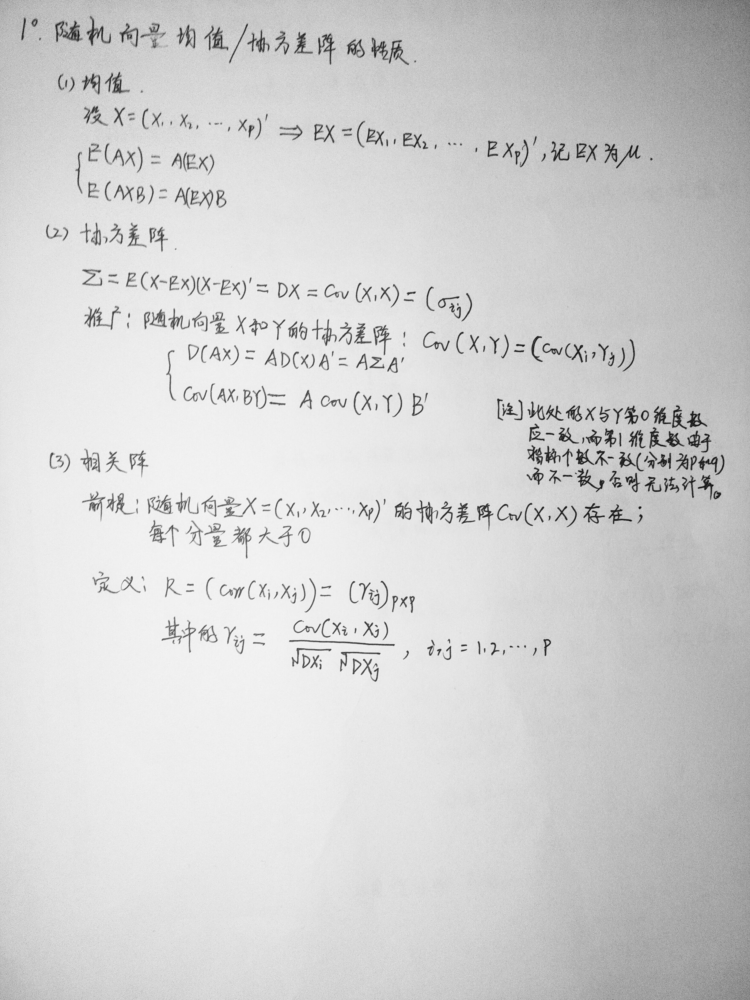
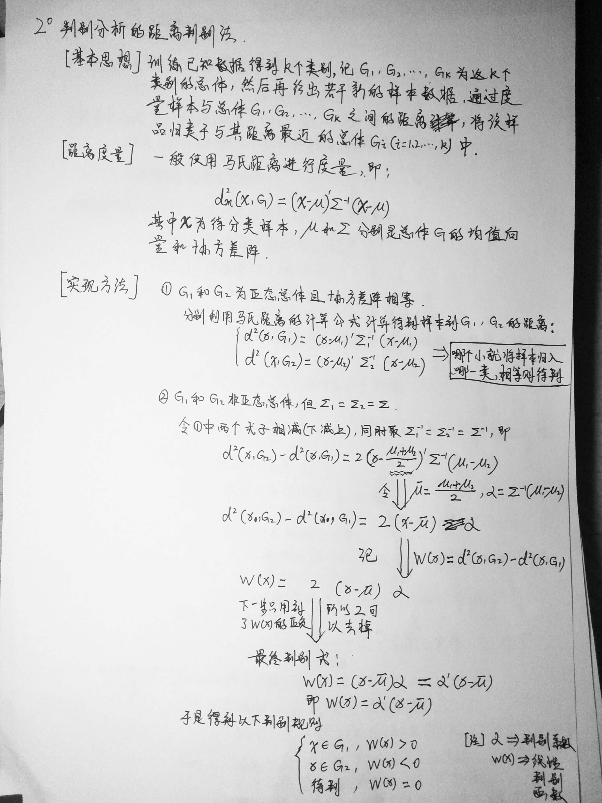
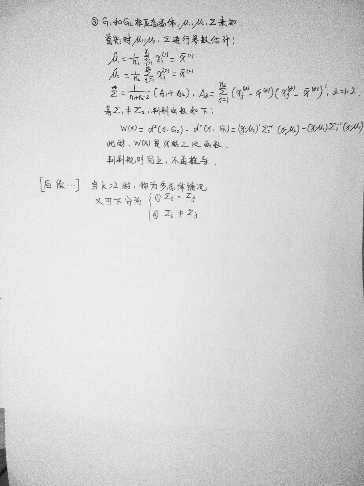
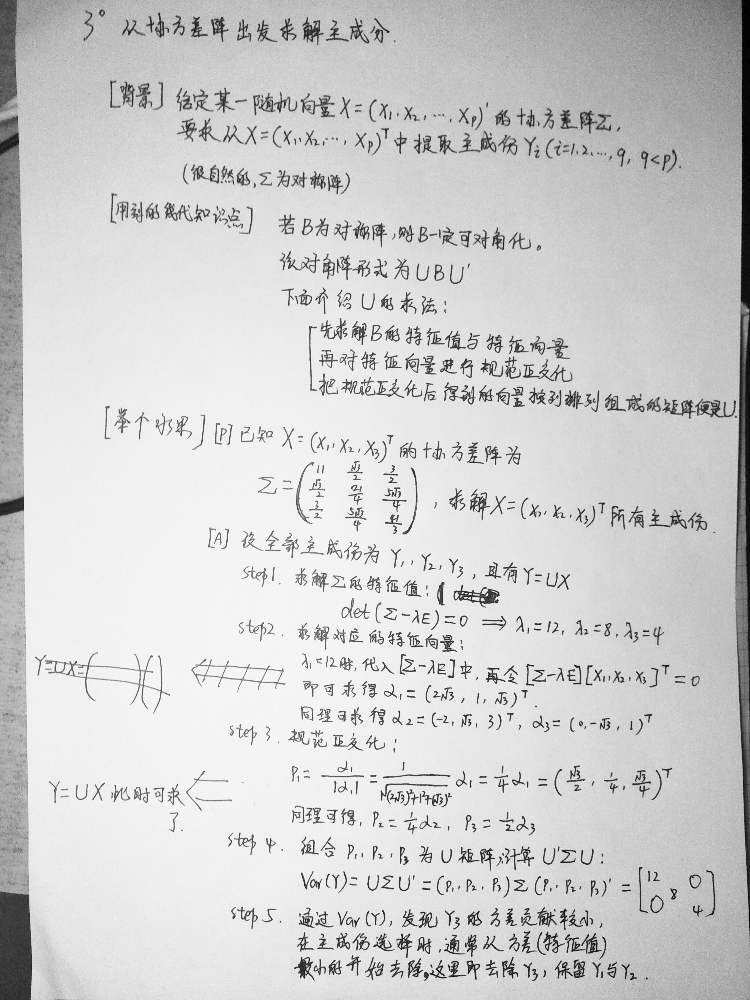

Part 1．
１．$What’s$ 统计距离？$What’s$ 统计距离与欧氏距离各自的优缺点(两者之间的区别与联系)?
2．$k-means$的思想、方法以及过程？
3．$Fisher$判别法的思想、方法以及过程推导？
4．聚类分析与判别分析的区别与联系？
5．PCA的思想与方法？
6．FA的思想与方法？
7．PCA与FA的区别与联系？
Part 2．
1．利用随机向量的均值与方差的性质求解协方差矩阵
2．通过判别分析/距离判别/计算马氏距离，做判别
3．$PCA$求解主成分
4．已知$FA$的结果，求解共同度，方差贡献率
$Part 1$．
１．$What’s$ 统计距离？$What’s$ 统计距离与欧氏距离各自的优缺点(两者之间的区别与联系)?
$1^。$
统计距离是一种可以体现各个变量在变差大小上的不同以及有时存在的相关性的距离，并且它与各变量所用的单位无关.
(1)优点：可以体现各个变量在变差大小上的不同以及有时存在的相关性的距离，并且它与各变量所用的单位无关.
(2)缺点：夸大了变化微小的变量的作用。受协方差矩阵不稳定的影响，并不总是能顺利计算出。$2^。$
欧氏距离欧也称欧几里得度量、欧几里得度量，是一个通常采用的距离定义，它是在$m$维空间中两个点之间的真实距离。在二维和三维空间中的欧氏距离的就是两点之间的距离。
(1)优点：欧式距离在计算方法和理解上较为简单
(2)缺点：在一些统计问题上有一些缺点，比如，在欧式距离中，每个坐标的贡献是同等的，但用测量值做为坐标值计算距离时，会带有不等的随机波动，这种情况下需要对坐标进行加权。
2．$k-means$的思想、方法以及过程？
基本思想:把每个样品聚集到其最近形心(均值)类中.方法:对于给定的样本集，按照样本之间的距离大小，将样本集划分为K个簇。让簇内的点尽量紧密的连在一起，而让簇间的距离尽量的大。过程：把样品粗略分成$K$个初始类$–>$进行修改，逐步分派到其最近均值的类中$–>$重复上一步，直到各类无元素进出
3．$Fisher$判别法的思想、方法以及过程推导？
思想：投影，将$k$组$p$维数据投影到某一个方向，使得组与组之间的投影尽可能地分开，然后再选择合适的判别规则，将新的样品进行分类判别。方法：过程：
4．聚类分析与判别分析的区别与联系？
区别：
1、基本思想不同聚类分析是根据研究对象特征对研究对象进行分类的一种多元分析技术,在未知各样本类别的情况下，把性质相近的个体归为一类, 使得同一类中的个体都具有高度的同质性, 不同类之间的个体具有高度的异质性；判别分析是对已知分类的数据建立由数值指标构成的分类规则即判别函数, 然后把这样的规则应用到未知分类的样本去分类2、研究目的不同
虽然都是研究分类的，但在进行
聚类分析前，对总体到底有几种类型不知道（研究分几类较为合适需从计算中加以调整）。判别分析则是在总体类型划分已知，对当前新样本判断它们属于哪个总体。3.所具有的方法不同
聚类分析分两种：$Q$型聚类（对样本的聚类），$R$型聚类（对变量的聚类）。聚类分析需要注意的是，一般小样本数据可以用系统聚类法，大样本数据一般用快速聚类法（$K$均值聚类法），当研究因素既有分类变量又有计量变量，可以用两步聚类。判别分析有$Fisher$判别，$Bayes$判别和逐步判别。一般用$Fisher$判别即可，要考虑概率及误判损失最小的用$Bayes$判别，但变量较多时，一般先进行逐步判别筛选出有统计意义的变量，再结合实际情况选择用哪种判别方法.
5．$PCA$的思想与方法？
思想：PCA通过线性变换将原始数据变换为一组各维度线性无关的表示，可用于提取数据的主要特征分量目的：为了节省计算机在进行计算时所占用的资源，在减少需要分析的指标的同时，尽量减少原指标包含信息的损失，并用随机变量的方差来代表保留信息的比重，以达到对所收集数据进行全面分析的目的。方法：协方差矩阵法，相关矩阵法参考：https://blog.csdn.net/daaikuaichuan/article/details/53444639
6．$FA$的思想与方法？
思想：根据相关性大小把原始变量分组，使得同组内的变量之间相关性较高，而不同组的变量间的相关性则较低方法：求解因子载荷的方法：主成分法，主轴因子法，极大似然法，最小二乘法，a因子提取法。
7．P$CA$与$FA$的区别与联系？
- 1．区别
(1)都是一种多维随机变量降维的方法
(2)$FA$求解初始因子时有一种方法是$PCA$ - 2．联系
(1)$PCA$是以方差度量保留的主成分的，使方差尽量大，$FA$中因子与原变量间有很高的相关性，且有很轻的解释能力
(2)形式不同.$PCA$是$Y=UX$，而$FA$为$X=AF+e$
(3)$FA$除主成分法外还有其他方法，比如极大似然法
(4)$FA$最后要进行因子旋转
Part 2．
1．利用随机向量的均值与方差的性质求解协方差矩阵

2．通过判别分析/距离判别/计算马氏距离，做判别


3．$PCA$求解主成分

4．已知$FA$的结果，求解共同度，方差贡献率